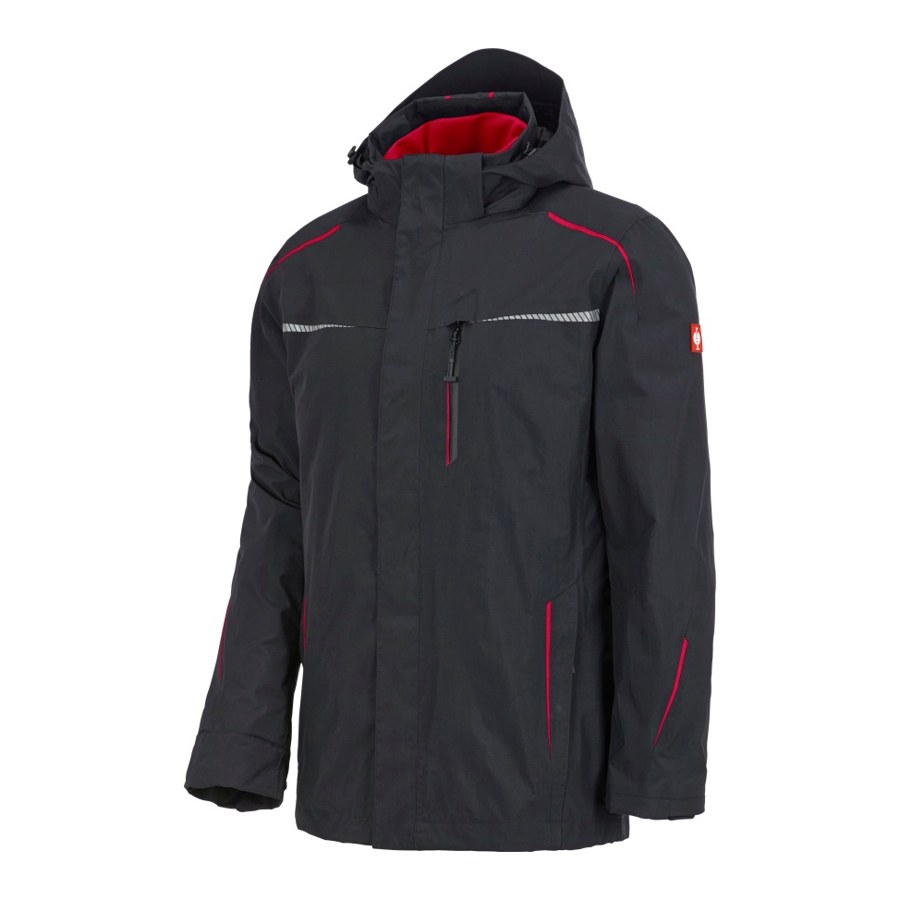
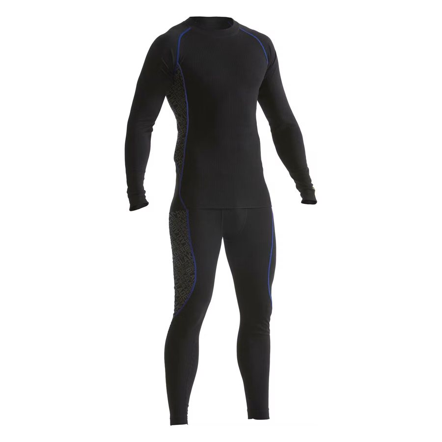
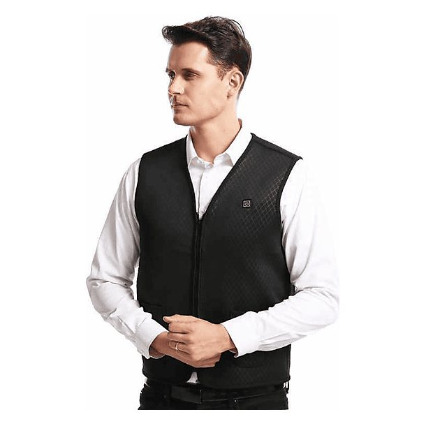
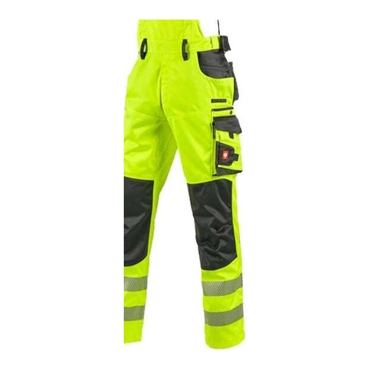
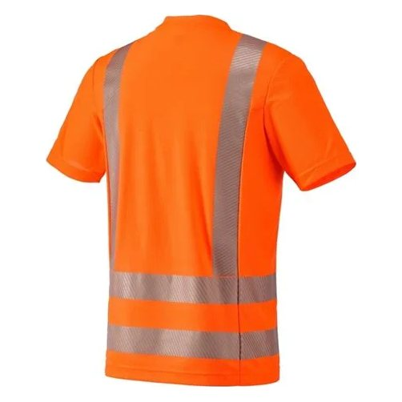
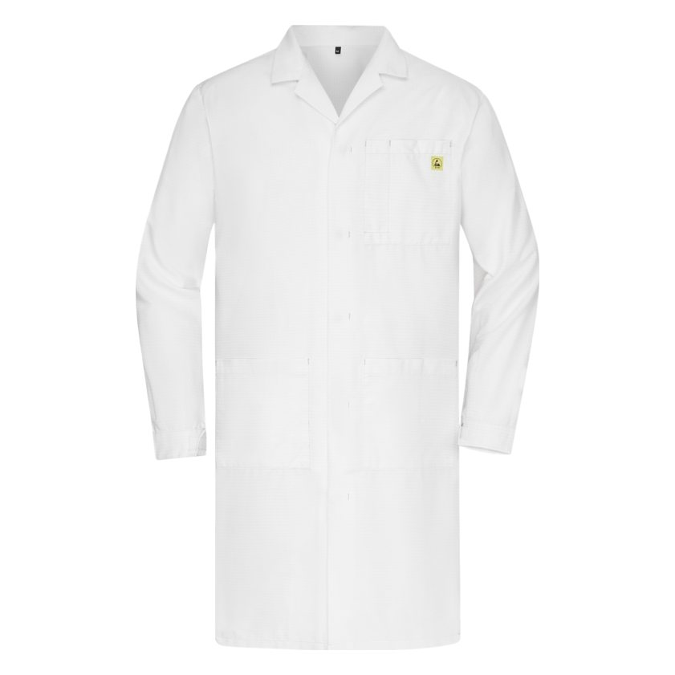
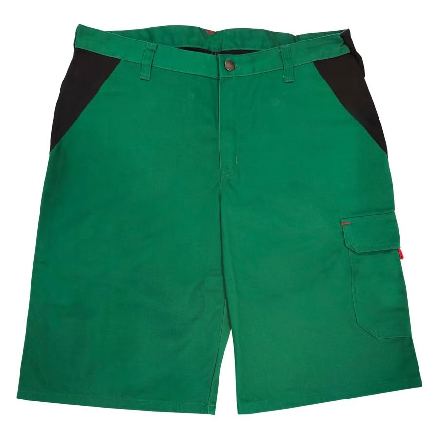

图片仅供参考，展示产品类型。
工作服
弹力工作背带
带金属夹的加厚弹力背带。
可调节弹力背带，配4个金属夹，适合作工裤配件。关注回弹性、夹力及镍释放。
技术参数
| 宽度 | 35-50毫米 |
|---|---|
| 长度 | 100-120厘米可调 |
| 夹子 | 4个金属夹 |
| 背部 | X形 |
| 颜色 | 黑、黄、橙 |
| 海关编码（HS） | 62129000 |
欧盟标准与法规
EN 1811皮肤接触镍释放（REACH第27项）(EU) 2023/988 GPSR一般产品安全法规 GPSR，欧盟责任人(EU) 1007/2011纺织品纤维成分标签REACH (EG) 1907/2006REACH附件XVII（偶氮染料、重金属）
搭配产品

本类别其他产品

棉质背带工作裤 （带护膝袋）耐磨的棉质或棉混纺背带工作裤，配有胸袋、卷尺袋和护膝袋，适合毛坯施工、拆除和翻新。

工作夹克 （收腰款, 棉/混纺）结实的棉混纺收腰工作夹克，配胸袋、收腰下摆和拉链，适合工地和手工业日常穿着。

软壳工作夹克 （防风防泼水）三层复合软壳夹克，内里为抓绒，带反光细节，适合春秋和冬季工地。

冬季絮棉工作夹克 （防风防泼水）保暖絮棉冬季夹克，外层防泼水，配抓绒领和防风袖口，适合霜冻天气户外作业。

高可视性反光警示背心 （黄/橙, EN ISO 20471）带反光条的荧光警示背心，适用于建筑、拆除和交通疏导作业。

高可视性反光警示夹克 （EN ISO 20471, 防水）带反光条的荧光警示夹克，符合 EN ISO 20471，适用于道路施工、交通管制、物流和有车辆通行的工地。

工作套头衫 （抓绒卫衣）耐穿的棉涤抓绒套头衫，可作为外套或背心内的保暖中间层。

纯棉工作 T 恤耐穿的纯棉圆领 T 恤，作为工地日常的贴身基础层。

棉质工作 Polo 衫 （可绣标）挺括的棉质珠地 Polo 衫，带纽扣门襟，适合绣标和印花，可用作公司和团队制服。

PU 防雨套装 （上衣+裤子, EN 343）PU 涂层涤纶防水雨衣套装，接缝压胶，适合在持续降雨中进行户外作业。

工装裤护膝插片 (一副,EN 14404 Type 2)

冬季工作保暖功能内衣套装 (长袖上衣+长裤)聚酯/氨纶两件套打底保暖内衣,内侧抓绒,适合低温作业:冬季夹克和软壳衣的叠穿底层。

工作腰带配工具袋/钉袋套装 (挂袋)聚酯工具腰带配工具袋和钉袋:将重量从裤子转移到髋部,让常用工具随手可取。

加热工作背心 (USB/充电宝供电,多加热区)碳纤维加热元件四区加热、配16,000 mAh电池(USB-C)的发热背心,适合低温作业。

高可视性警示工装裤 (EN ISO 20471 2级,弹力面料,护膝口袋)荧光黄或荧光橙弹力工装裤,配符合 EN ISO 20471 2级的反光条和护膝口袋,适用于道路施工、土建、物流和交通管制。

高可视性警示背带工装裤 (EN ISO 20471 2级)荧光色背带工装裤,配符合 EN ISO 20471 2级的反光条、胸袋和侧袋,适用于道路、土建、铁路施工和物流。

安全鞋用工作袜 (棉混纺,毛圈加厚,3双装)棉混纺中筒工作袜,毛圈加厚,适用于安全鞋和工作靴,3双装。

高可视警示 T 恤 EN ISO 20471100% 涤纶短袖 T 恤,荧光黄或橙色,带 5 厘米宽反光条,符合 EN ISO 20471。

焊工防护夹克 (EN ISO 11611)

隔热阻燃连体工作服 (EN ISO 11612,阻燃棉)

电工防电弧连体防护服 (IEC 61482,Cat 2,阻燃棉)

防静电工作大褂 (EN 1149-5 / EN 61340-5-1)

棉质工装短裤带工装口袋的夏季短款工作裤。

涤棉连体工作服车间和工业用涤棉连体服。

可重复使用PVC雨披带帽可重复使用雨披，穿脱方便。

无袖工作抓绒背心保暖无袖抓绒背心，可绣标。

针织毛线帽 （可绣标）冬季工作用保暖腈纶针织帽。

保暖面罩 （巴拉克拉瓦帽）防风保暖面罩，适合冬季户外作业。

棉质工作棒球帽 （可绣标）可调节棉质工作帽，适合团队服装。